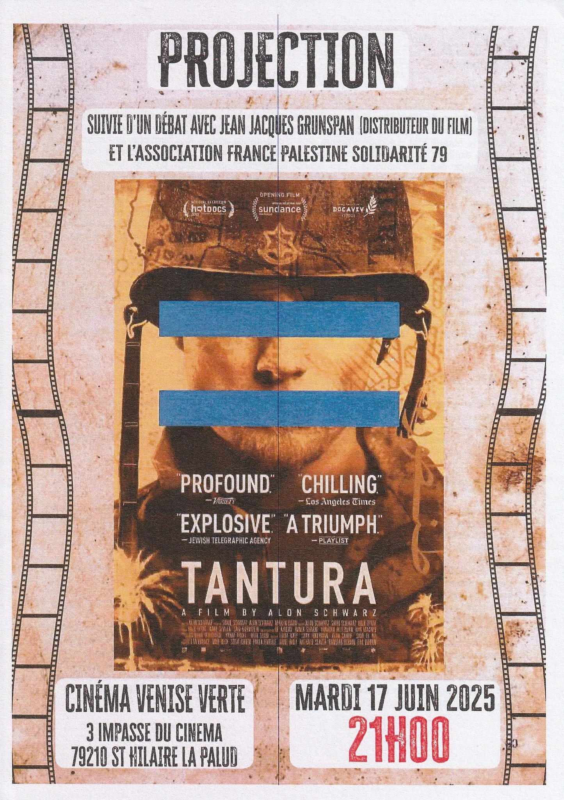
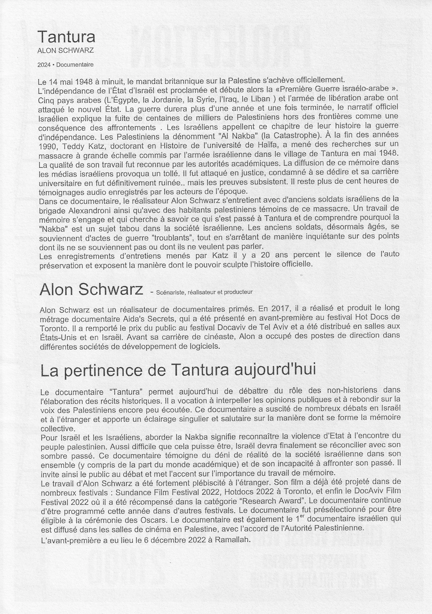

Annonce archivée
« Tantura ». Projection-débat à Saint-Hilaire-la-Palud le 17 juin
Date indiquée par Facebook · 16 juin 2025
Repères éditoriaux
Nous avions annoncé la projection du documentaire « Tantura » le mardi 17 juin 2025 à 21 h, au cinéma Venise Verte de Saint-Hilaire-la-Palud. L’affiche annonçait un débat après la séance.
Texte conservé avec la publication
Cinéma Venise Verte à St Hilaire la Palud. Mardi 17 juin à 21h00 , projection du documentaire TANTURA suivie d'un débat.
Le documentaire TANTURA a suscité de nombreux débats en Israël et à l'étranger. Il apporte un éclairage singulier et salutaire sur la manière dont se forme la mémoire collective.


Sources
Archive rouge · export Facebook · AR-0002-FB-01090
À lire aussi · À Niort, le rassemblement du 25 octobre pour la paix en vidéo · Le lien d’origine